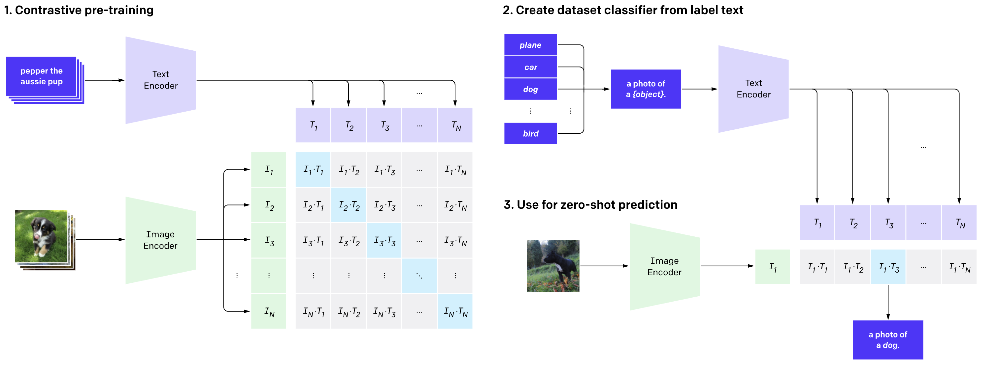

Projeto de Machine Learning 2022.2
Contexto
O Deep Learning (aprendizado profundo) é uma técnica de aprendizado de máquina que ensina os computadores a fazerem o que é natural para os humanos: aprender pelo exemplo. O DL é uma tecnologia fundamental por trás dos carros autônomos, permitindo que eles reconheçam um sinal de parada ou distingam um pedestre de um poste de luz. É a chave para o controle de voz em dispositivos de consumo, como telefones, tablets, TVs e alto-falantes viva-voz, entre outras tecnologias presentes em nosso cotidiano. Tal sub-área do aprendizado de máquina está recebendo muita atenção ultimamente e por um bom motivo: alcançar resultados que antes não eram possíveis.
Embora o deep learning tenha revolucionado a visão computacional, as abordagens atuais têm vários problemas importantes:
- Conjuntos de dados de visão típicos são trabalhosos e caros para criar enquanto ensinam apenas um conjunto restrito de conceitos visuais
- Os modelos de visão padrão são bons em uma tarefa e apenas uma tarefa e exigem um esforço significativo para se adaptar a uma nova tarefa
- Modelos com bom desempenho em benchmarks têm desempenho decepcionantemente ruim em testes de estresse, lançando dúvidas sobre toda a abordagem de aprendizado profundo para visão computacional.
Motivação
Para combater essas barreiras, criou-se o CLIP, uma rede neural que pode ser aplicado a qualquer benchmark de classificação visual, simplesmente fornecendo os nomes das categorias visuais a serem reconhecidas, semelhantes aos recursos de “zero-shot” do GPT-2 e GPT-3.

Nosso projeto foi baseado justamente nessa rede neural, com algumas modificações que iremos mostrar na aba Código